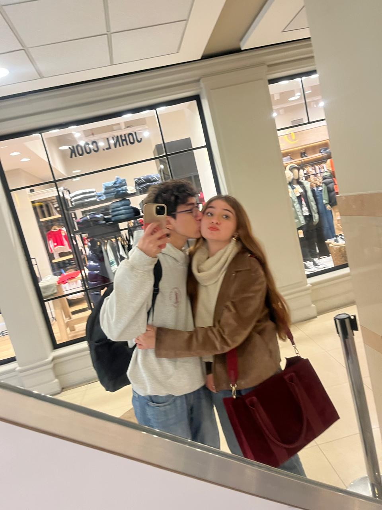
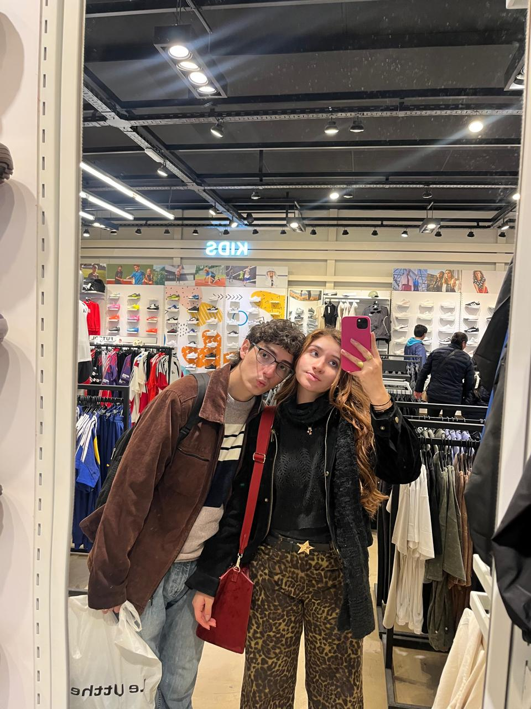
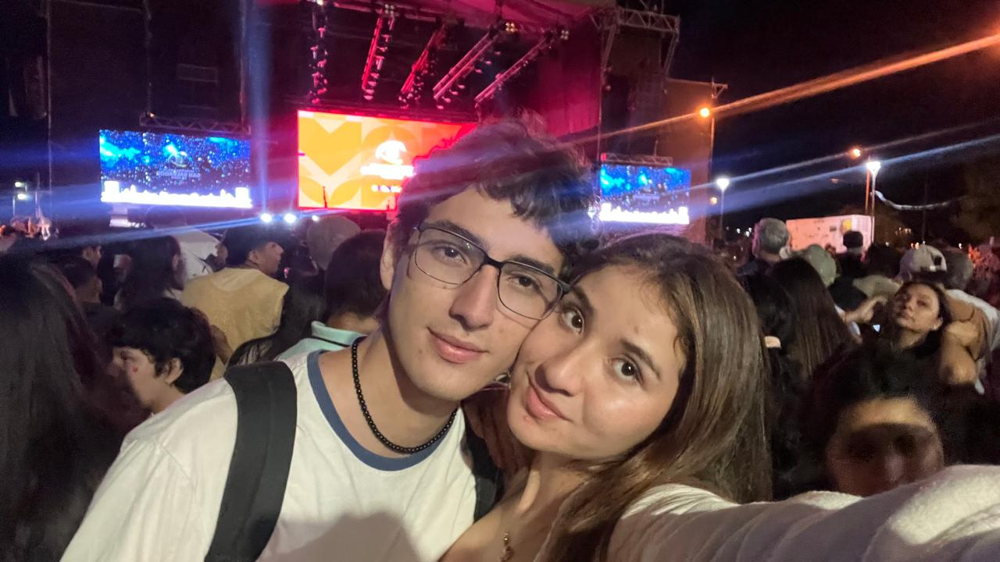
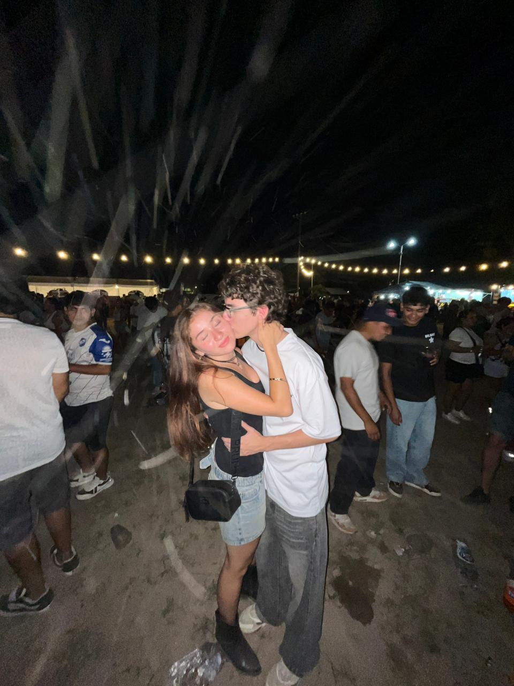
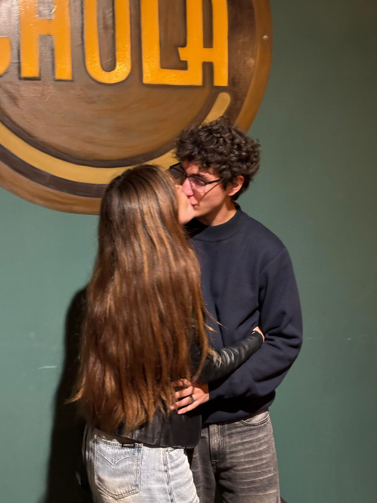
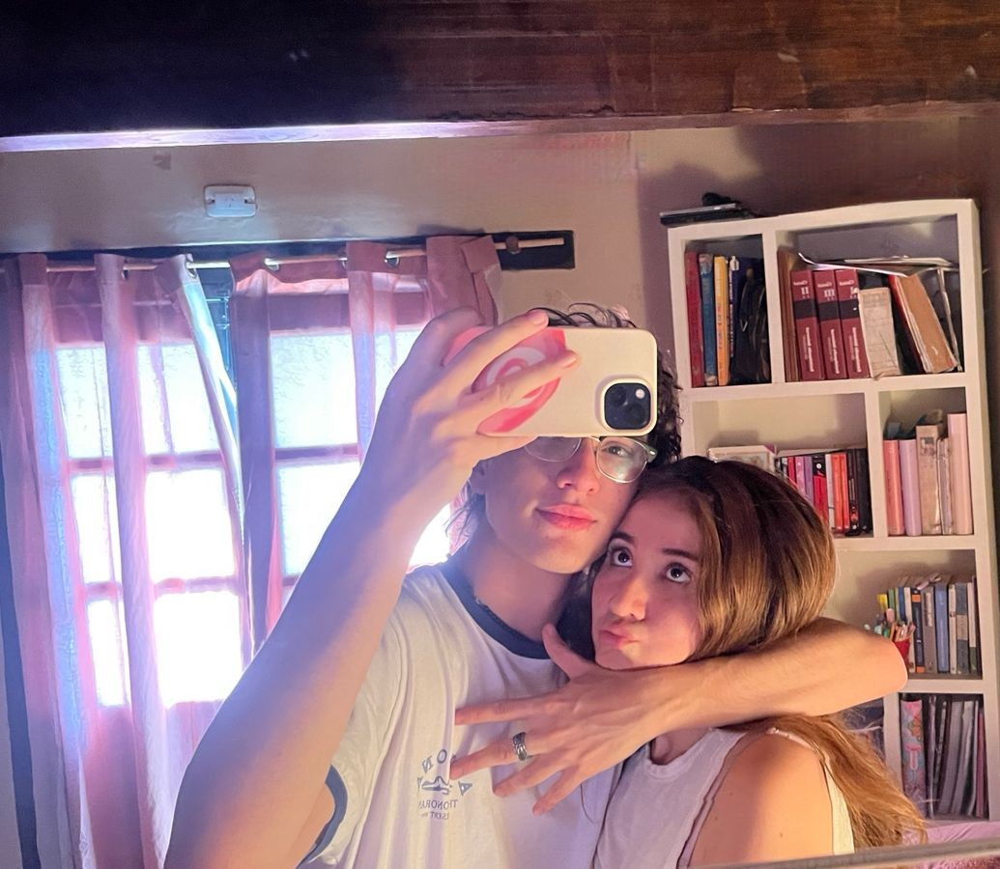
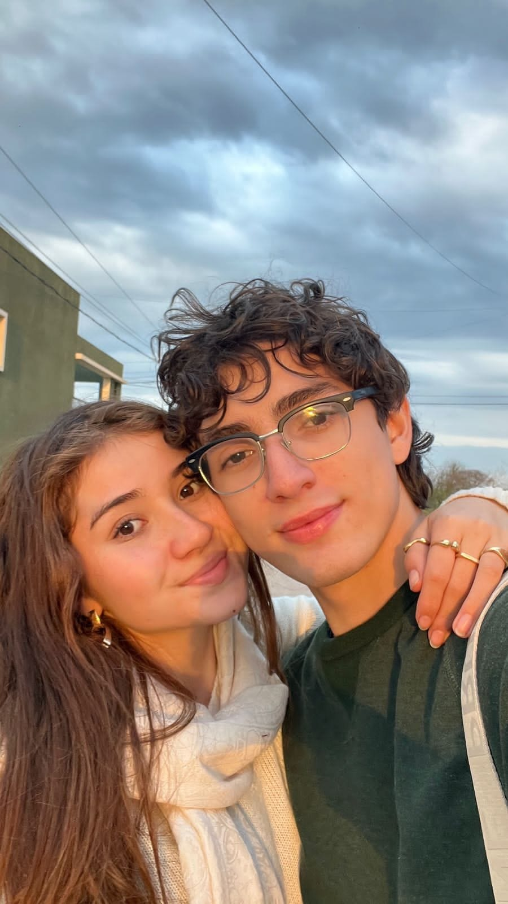
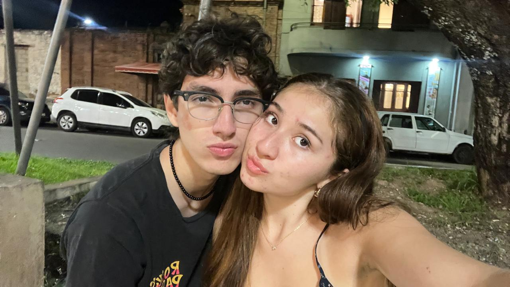

Ni la intimidad de tu frente clara como una fiesta ni la costumbre de tu cuerpo, aún misterioso y tácito y de niña, ni la sucesión de tu vida asumiendo palabras o silencios serán favor tan misterioso como el mirar tu sueño implicado en la vigilia de mis brazos. Virgen milagrosamente otra vez por la virtud absolutoria del sueño, quieta y resplandeciente como una dicha que la memoria elige, me darás esa orilla de tu vida que tú misma no tienes. Arrojado a quietud divisaré esa playa última de tu ser y te veré por vez primera, quizá, como Dios ha de verte, desbaratada la ficción del Tiempo sin el amor, sin mí.
UN AÑO MAS CON VOS

Fuimos al shopping jiji

Fuimos a hacer compras

Vimos a los tekis!!!

Mi cumpleaños

Tu cumpleaños!!

En tu casita haciendo fiaca

En la casa del pepe jeje

Salimos a pasear por ahi como siempre
POEMAS QUE ME RECUERDAN A VOS
Acá te dejo unos poemas que me recuerdan a vos, hay de mucha gente jiji
También dejé uno mío por ahí jeje...
Cuando en la noche te envuelven Las alas de tul del sueño y tus tendidas pestañas semejan arcos de ébano, por escuchar los latidos de tu corazón inquieto y reclinar tu dormida cabeza sobre mi pecho, ¡diera, alma mía, cuanto poseo, la luz, el aire y el pensamiento! Cuando se clavan tus ojos en un invisible objeto y tus labios iluminan de una sonrisa el reflejo, por leer sobre tu frente el callado pensamiento que pasa como la nube del mar sobre el ancho espejo, ¡diera, alma mía, cuanto deseo, la fama, el oro, la gloria, el genio! Cuando enmudece tu lengua y se apresura tu aliento, y tus mejillas se encienden y entornas tus ojos negros, por ver entre sus pestañas brillar con húmedo fuego la ardiente chispa que brota del volcán de los deseos, diera, alma mía, por cuanto espero, la fe, el espíritu, la tierra, el cielo.
Camino lentamente por la senda de acacias, me perfuman las manos sus pétalos de nieve, mis cabellos se inquietan bajo céfiro leve y el alma es como espuma de las aristocracias. Genio bueno: este día conmigo te congracias, apenas un suspiro me torna eterna y breve... ¿Voy a volar acaso ya que el alma se mueve? En mis pies cobran alas y danzan las tres Gracias. Es que anoche tus manos, en mis manos de fuego, dieron tantas dulzuras a mi sangre, que luego, llenóseme la boca de mieles perfumadas. Tan frescas que en la limpia madrugada de Estío mucho temo volverme corriendo al caserío prendidas en mis labios mariposas doradas.
Tus manos son mi caricia mis acordes cotidianos te quiero porque tus manos trabajan por la justicia si te quiero es porque sos mi amor mi cómplice y todo y en la calle codo a codo somos mucho más que dos tus ojos son mi conjuro contra la mala jornada te quiero por tu mirada que mira y siembra futuro tu boca que es tuya y mía tu boca no se equivoca te quiero porque tu boca sabe gritar rebeldía si te quiero es porque sos mi amor mi cómplice y todo y en la calle codo a codo somos mucho más que dos y por tu rostro sincero y tu paso vagabundo y tu llanto por el mundo porque sos pueblo te quiero y porque amor no es aureola ni cándida moraleja y porque somos pareja que sabe que no está sola te quiero en mi paraíso es decir que en mi país la gente viva feliz aunque no tenga permiso si te quiero es porque sos mi amor mi cómplice y todo y en la calle codo a codo somos mucho más que dos.
Velloncito de mi carne, que en mis entrañas tejí, velloncito friolento, ¡duérmete apegado a mí! La perdiz duerme en el trébol escuchándole latir: no te turben mis alientos, ¡duérmete apegado a mí! Hierbecita temblorosa asombrada de vivir, no te sueltes de mi pecho: ¡duérmete apegado a mí! Yo que todo lo he perdido ahora tiemblo hasta al dormir. No resbales de mi brazo: ¡duérmete apegado a mí!
Solía escribir para el tiempo desdichandolo por que un día más es un día menos El día que tuve suerte me tome mi tiempo Gasté todas mis noches fuera de mi, haciendo lo que me pidiese mi cuerpo Dandome cuenta lo tonto que fui Que intente cometer un crimen que no es posible Pero al final sonreí, no porque encontre algo en mí Si no que porfin pude ver como cometer el crimen que pedí Al ver la otra persona que también que quería huir Supe en ese instante que el taboo lo rompí y me convertí en un fugitivo con quien voy a compartir mi crimen.
No solo hay poemas...
También hay temas que me recuerdan a vos...
Mazas y Catapultas
Kase.O y Rozalen
Be Like a Woman
Chris Rainbow
Wanna Be
Spice girls - (A mi me gusta más la version de Scott Bradle jiji)
Ya no se que hacer conmigo
Cuarteto de Nos
Un poquito más...
Sé que no hay muchos temas en la página, estoy trabajando en la playlist de Spotify jejeje. Dame un poquito de tiempo no quiero que sea un menjuje de canciones que no peguen. Confia en mii.